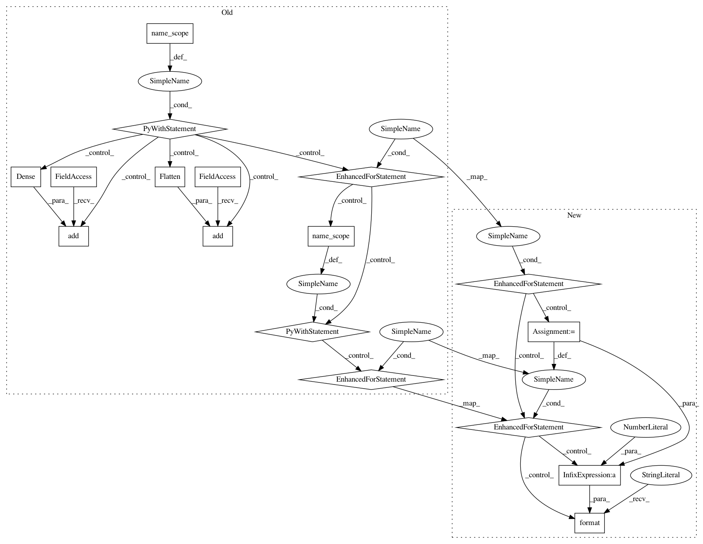

340094b32576bf6dce50dbfdf82df14a5f6c043e,gluon/gluoncv2/models/efficientnet.py,EfficientNet,__init__,#EfficientNet#Any#Any#Any#Any#Any#Any#Any#Any#Any#Any#Any#,184
Before Change
self.in_size = in_size
self.classes = classes
with self.name_scope():
self.features = nn.HybridSequential(prefix="")
self.features.add(conv3x3_block(
in_channels=in_channels,
out_channels=init_block_channels,
strides=2,
bn_use_global_stats=bn_use_global_stats,
activation="swish"))
in_channels = init_block_channels
for i, channels_per_stage in enumerate(channels):
kernel_sizes_per_stage = kernel_sizes[i]
expansion_factors_per_stage = expansion_factors[i]
stage = nn.HybridSequential(prefix="stage{}_".format(i + 1))
with stage.name_scope():
for j, out_channels in enumerate(channels_per_stage):
kernel_size = kernel_sizes_per_stage[j]
expansion_factor = expansion_factors_per_stage[j]
strides = strides_per_stage[i] if (j == 0) else 1
if i == 0:
stage.add(EffiDwsConvUnit(
in_channels=in_channels,
out_channels=out_channels,
bn_use_global_stats=bn_use_global_stats))
else:
stage.add(EffiInvResUnit(
in_channels=in_channels,
out_channels=out_channels,
kernel_size=kernel_size,
strides=strides,
expansion_factor=expansion_factor,
bn_use_global_stats=bn_use_global_stats))
in_channels = out_channels
self.features.add(stage)
self.features.add(conv1x1_block(
in_channels=in_channels,
out_channels=final_block_channels,
bn_use_global_stats=bn_use_global_stats,
activation="swish"))
in_channels = final_block_channels
self.features.add(nn.GlobalAvgPool2D())
self.output = nn.HybridSequential(prefix="")
self.output.add(nn.Flatten())
if dropout_rate > 0.0:
self.output.add(nn.Dropout(rate=dropout_rate))
self.output.add(nn.Dense(
units=classes,
in_units=in_channels))
def hybrid_forward(self, F, x):
x = self.features(x)
x = self.output(x)
return x
After Change
Small float added to variance in Batch norm.
bn_use_global_stats : bool, default False
Whether global moving statistics is used instead of local batch-norm for BatchNorm layers.
Useful for fine-tuning.
in_channels : int, default 3
Number of input channels.
in_size : tuple of two ints, default (224, 224)
Spatial size of the expected input image.
classes : int, default 1000
Number of classification classes.
def __init__(self,
channels,
init_block_channels,
final_block_channels,
kernel_sizes,
strides_per_stage,
expansion_factors,
dropout_rate=0.2,
bn_epsilon=1e-3,
bn_use_global_stats=False,
in_channels=3,
in_size=(224, 224),
classes=1000,
**kwargs):
super(EfficientNet, self).__init__(**kwargs)
self.in_size = in_size
self.classes = classes
activation = "swish"
with self.name_scope():
self.features = nn.HybridSequential(prefix="")
self.features.add(conv3x3_block(
in_channels=in_channels,
out_channels=init_block_channels,
strides=2,
bn_epsilon=bn_epsilon,
bn_use_global_stats=bn_use_global_stats,
activation=activation))
in_channels = init_block_channels
for i, channels_per_stage in enumerate(channels):
kernel_sizes_per_stage = kernel_sizes[i]
expansion_factors_per_stage = expansion_factors[i]
In pattern: SUPERPATTERN
Frequency: 3
Non-data size: 17
Instances
Project Name: osmr/imgclsmob
Commit Name: 340094b32576bf6dce50dbfdf82df14a5f6c043e
Time: 2019-06-10
Author: osemery@gmail.com
File Name: gluon/gluoncv2/models/efficientnet.py
Class Name: EfficientNet
Method Name: __init__
Project Name: osmr/imgclsmob
Commit Name: f68e69b3377dbb7e04cc5ab9d63109699843a435
Time: 2018-12-07
Author: osemery@gmail.com
File Name: pytorch/pytorchcv/models/channelnet.py
Class Name: ChannelNet
Method Name: __init__
Project Name: osmr/imgclsmob
Commit Name: 340094b32576bf6dce50dbfdf82df14a5f6c043e
Time: 2019-06-10
Author: osemery@gmail.com
File Name: gluon/gluoncv2/models/efficientnet.py
Class Name: EfficientNet
Method Name: __init__
Project Name: osmr/imgclsmob
Commit Name: 14303300e332c3be5d669789f3aa736befa22575
Time: 2020-10-19
Author: osemery@gmail.com
File Name: gluon/gluoncv2/models/resnesta.py
Class Name: ResNeStA
Method Name: __init__